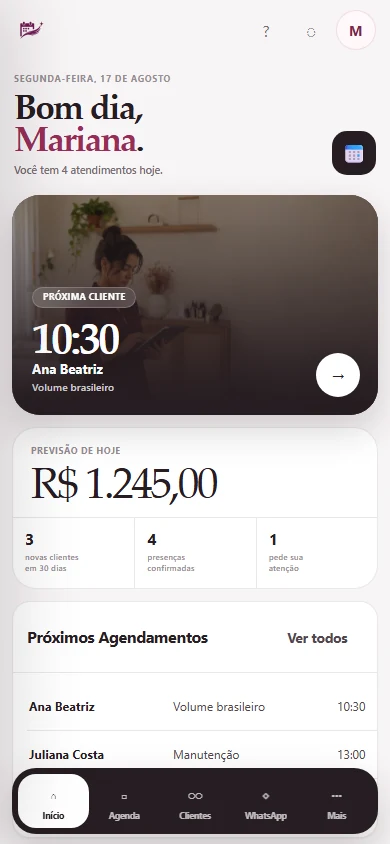
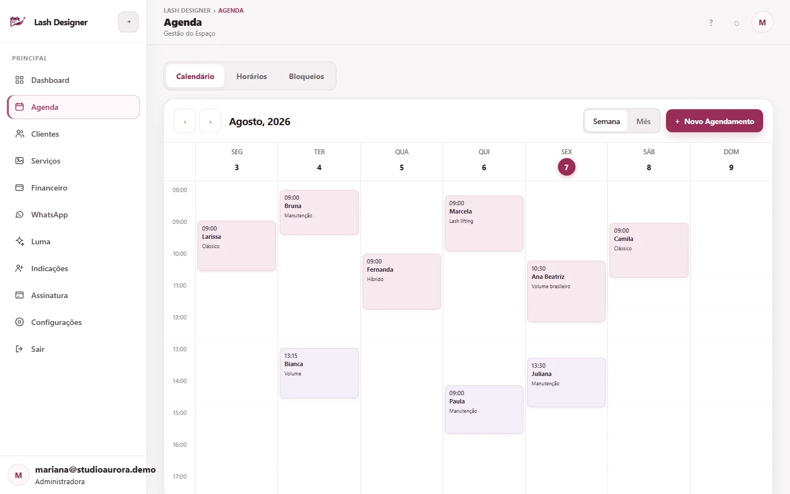
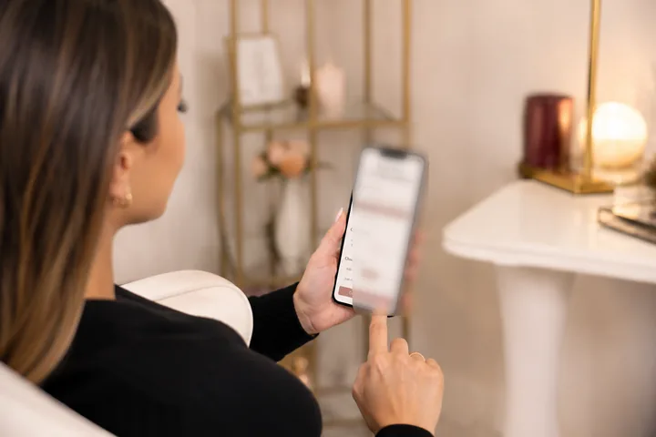
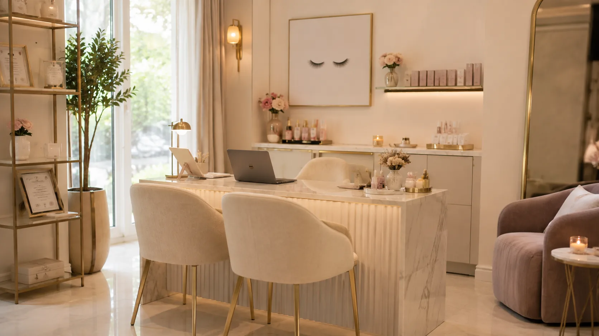

A cliente marca sem depender da sua resposta.
Seu link mostra serviços e horários no celular. Ela escolhe e agenda no navegador.
Sua cliente agenda pelo link, o WhatsApp cuida das confirmações e você acompanha agenda, clientes e financeiro no mesmo lugar — sem administrar tudo entre um atendimento e outro.



Quando agenda, WhatsApp, clientes e dinheiro vivem separados, sobra para você fazer a ligação. O Lash Designer junta esse fluxo.
Seu link mostra serviços e horários no celular. Ela escolhe e agenda no navegador.
Agenda e WhatsApp trabalham juntos para confirmações, lembretes e contexto da conversa.
Horários, clientes, financeiro e pendências ficam legíveis quando você volta para o painel.
Três partes da rotina que hoje dependem de você passam a conversar entre si.


A Luma interpreta indicadores do seu espaço e responde em linguagem simples. Ela entra depois da operação — como uma camada de leitura, não como mais uma tela para você alimentar.
Seu mês está mais concentrado nas quintas e sextas.Há espaço ocioso no início da semana que pode virar uma ação de retorno.
Escolha o período que combina com seu momento. O produto é o mesmo; muda só a forma de pagamento.
cobrado mês a mês
R$ 169,90 a cada 3 meses
R$ 329,90 a cada 6 meses
R$ 598,80 a cada 12 meses
Não. O WhatsApp continua sendo seu canal de relacionamento. O Lash Designer organiza confirmações, lembretes e conversas junto da rotina.
Deixe o studio organizado para você e uma experiência mais profissional para cada cliente que chega pelo seu link.